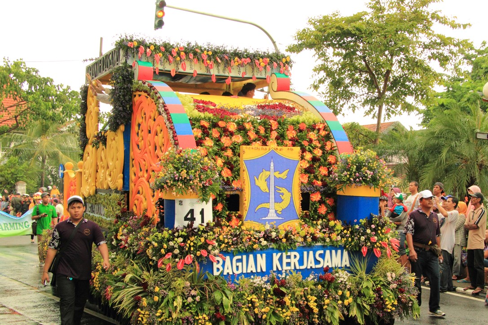

Kota Surabaya
Kota Surabaya (SUB) atau yang dikenal sebagai Kota Pahlawan memiliki cerita sejarah yang kental dengan nilai kepahlawanan. Sejak awal berdirinya, kota ini memiliki sejarah panjang yang terkait dengan nilai-nilai heroisme. Istilah Surabaya terdiri dari kata sura (berani) dan baya (bahaya), yang kemudian secara harfiah diartikan sebagai berani menghadapi bahaya yang datang. Nilai keberanian tersebut salah satunya diwujudkan dalam peristiwa pertempuran antara Raden Wijaya dan Pasukan Mongol pimpinan Kubilai Khan di tahun 1293. Begitu bersejarahnya pertempuran tersebut hingga tanggalnya diabadikan menjadi tanggal berdirinya Kota Surabaya hingga saat ini, yaitu 31 Mei. Bahkan, kota ini juga terkenal akan historis keberanian perjuangannya dalam memperjuangkan kemerdekaan Republik Indonesia. Terlepas dari nilai historisnya ternyata surabaya memiliki banyak tempat wisata yang menarik, budaya yang unik, dan kaya akan kulinernya. Kuy kunjungi Kota Surabaya melalui virtual bersama web ini.
Wisata
Kota Surabaya merupakan kota terbesar kedua di Indonesia, sekaligus menjadi ibu kota provinsi Jawa Timur. Kota ini identik dengan nilai historis yang cukup panjang. Bahkan, Kota Surabaya juga menjadi saksi bisu dalam memperjuangkan kemerdekaan Republik Indonesia. Sehingga, kota ini sering disebut juga sebagai Kota Pahlawan.
1. Tugu Pahlawan
Alamat: Jl. Pahlawan, Alun-alun Contong, Kec. Bubutan, Surabaya
Bisa dikatakan belumlah lengkap ketika berwisata di kota Surabaya bila belum ke Tugu Pahlawan. Sesuai namanya, Tugu Pahlawan berdiri sebagai pengingat peristiwa 10 November 1945. Bangunan ini didirikan sebagai bukti perjuangan arek-arek Surabaya dalam melawan pasukan sekutu dalam rangka meraih kemerdekaan Republik Indonesia. Di dalam bangunan ini juga terdapat museum yang bernama Museum Sepuluh Nopember dan tentunya menarik untuk kita kunjungi, serta di dalam museum ini terdapat beberapa peninggalan yang memiliki nilai historis yang tinggi. Untuk memasuki museum ini tentunya tarif masuk yang dipasang termasuk terjangkau.
2. Surabaya Old Town
Alamat: Kawasan Kota Tua Surabaya, Surabaya
Bila kalian bosan dengan dengan suasana mal ataupun suasana modern lainnya, datanglah ke Surabaya Old Town atau Kota Tua Surabaya yang dapat dijadikan destinasi pilihan. Selain mendapat suguhan gedung bergaya tempo dulu, berwisata ke kawasan kota tua juga dapat menambah ilmu pengetahuan sejarah. Di tempat ini juga terdapat saksi bisu tempat bersejarah pada saat sebelum terjadinya Peristiwa Sepuluh November pada akhir bulan Oktober tahun 1945 yang dimana terjadi peristiwa di Jembatan Merah yang menewaskan jenderal Inggris, A.W.S. Mallaby. Selain kaya akan sejarah di dalamnya. Bangunan di kawasan kota tua ini memiliki keindahan tersendiri seperti bangunan De Javasche Bank, Museum Bank Mandiri, Gereja Katolik Kelahiran Santa Perawan Maria, dan masih banyak bangunan keren lainnya.
3. House of Sampoerna
Alamat: Taman Sampoerna No.6, Krembangan Utara, Kec. Pabean Cantian, Surabaya
Surabaya dapat dikatakan kota yang penuh dengan sejarah. Banyak sekali bangunan kolonial yang digunakan sebagai museum, salah satunya yaitu House of Sampoerna. Di tempat ini, kita dapat merasakan berwisata sambil belajar. Dahulu, bangunan museum ini merupakan panti asuhan pemeritah belanda, yang kemudian dibeli oleh pendiri Sampoerna untuk memproduksi rokok.
4. Suroboyo Carnival Night Market
Alamat: Jl. Ahmad Yani No. 333, Dukuh Menanggal, Gayungan, Surabaya
Selain memiliki tempat wisata yang kaya akan historisnya, Surabaya juga memiliki tempat wisata hiburan menarik yaitu SCNM (Suroboyo Carnival Night Market) ini bisa jadi salah satu destinasi wisata yang menarik buat kita kunjungi. Tempat wisata ini buka di malam hari dan menyuguhkan berbagai wahana seru untuk pengunjung. Harga yang ditawarkan untuk tiket masuk wisata ini juga dapat dibilang cukup terjangkau dengan atraksi yang terdapat di tempat ini sangat banyak. Apabila anda ingin berwisata bersama teman, keluarga, saudara, ataupun pasangan anda, tempat ini cocok untuk dikunjungi karena di dalamnya terdapat banyak atraksi yang menarik dengan berbagai tema yang unik.
5. Food Junction Grand Pakuwon
Alamat: Jl. Grand Banjar Boulevard, Tandes, Banjar Sugihan, Surabaya
Food Junction Grand Pakuwon Surabaya merupakan ikon baru di Surabaya. Di tempat ini terdapat sebuah danau buatan yang indah dan arena permainan. Danau buatan yang ada cukup besar dan pengunjung dapat bermain atraksi disana. Tempat ini juga dilengkapi dengan area indoor dengan pendingin ruangan dengan desain interior bergaya industrial. Atraksi yang ada dalam tempat ini antara lain perahu karet, sepeda air, becak, kereta kelinci, dan masih banyak lagi.Selain memiliki atraksi yang unik, tempat ini cocok untuk pecinta kuliner, wisata sehingga food junction ini bisa menjadi pilihan untuk berwisata. Tempat ini memiliki desain yang menarik dan view yang bagus. Disini kita bisa makan sambil menikmati keindahan tepi danau. Di tempat ini kita juga bisa menikmati berbagai jenis kuliner baik yang berasal dari dalam maupun luar negeri. Selain itu, ada lebih dari 100 tenant yang menjual makanan berbeda dan bisa kita pilih sesuai selera sambil menikmati wisata di dalamnya.
6. Kenjeran Park
 Alamat: Jl. Pantai Ria Kenjeran, Sukolilo Baru, Kec. Bulak, Surabaya
Alamat: Jl. Pantai Ria Kenjeran, Sukolilo Baru, Kec. Bulak, Surabaya
Kenjeran Park atau yang dikenal sebagai Kenpark memiliki atraksi yang menarik dan pemandangan yang menawan. Di tempat wisata di Surabaya ini anda dapat melihat indahnya langit saat matahari terbit atau tenggelam, berenang, bermain pasir di pantai, serta menikmati bangunan berarsitektur yang unik di tempat ini. Beberapa bangunan yang memiliki desain yang unik. Misalnya, bangunan Tian Ti yang merupakan replika Temple of Heaven di Tiongkok, replika Buddha Catur Muka di Thailand, Sanggar Agung yang memiliki desain perpaduan Bali dan Tiongkok, serta patung Dewi Kwan Im dengan tinggi sekitar 20 meter yang disertai patung naga. Selain itu, masih banyak atraksi dan tempat hiburan lainnya yang dapat anda rasakan di tempat ini.
7. Patung Suroboyo Raksasa
Alamat: Jl. Pantai Kenjeran, Kedung Cowek, Kec. Bulak, Surabaya
Patung Suroboyo merupakan patung yang paling ikonik ketika anda mengunjungi Kota Surabaya. Patung ini terdiri atas dua hewan ini yang menjadi inspirasi nama kota Surabaya yakni ikan sura (hiu) dan baya (buaya) yang tentunya memiliki makna yang terkandung didalamnya. Patung ini pada awalnya berada di depan Kebun Binatang Surabaya. Namun, pada tahun belakangan ini telah diresmikan Patung Suroboyo baru yang terletak di Taman Suroboyo yang ukurannya jauh lebih besar dari aslinya dan memiliki tinggi 25 meter sehingga patung ini juga dapat disebut sebagai Patung Suroboyo Raksasa. Jika anda ingin mengunjungi Patung Suroboyo yang terbesar ini anda dapat mengunjunginya di daerah Kenjeran, Surabaya Utara.
Kuliner
Selain dikenal dengan nilai historis yang ada di Kota Surabaya, ternyata kota ini memiliki banyak tempat kuliner yang sangat menarik dan terkenal akan kelezatannya. Bahkan, kuliner dapat menjadi tujuan utama ketika anda mengunjungi Kota Surabaya.
1. Depot Bu Rudy
 Alamat: Jl. Dharmahusada No.140, Mojo, Kec. Gubeng, Surabaya
Alamat: Jl. Dharmahusada No.140, Mojo, Kec. Gubeng, Surabaya
Bagi pecinta sambal sepertinya kurang lengkap bila belum mendatangi tempat satu ini. Menu yang disediakan di depot ini sangat beragam. Namun, kita harus mencoba menu andalan dari depot ini, yaitu nasi udang empal. Dijamin membuat kita ketagihan. Untuk harga yang dipasang untuk berbagai makanan disini juga standard dan tidak terlalu mahal. Pastikan anda pergi ke tempat ini di luar jam makan siang dan waktu pulang kerja, karena biasanya tempat ini sangat ramai dikunjungi pada waktu tersebut.
2. Sate Klopo Ondomohen
Alamat: Jl. Walikota Mustajab No.36, Ketabang, Kec. Genteng, Surabaya
Bagi pecinta sate, tempat ini wajib untuk dikunjungi. Sate Klopo Ondomohen merupakan sate daging sapi, ayam, usus, udang, atau sumsum yang dibakar dan disajikan dengan bumbu sate seperti umumnya. Yang membedakan sate ini dengan sate pada umumnya adalah irisan sate yang lebih besar dan sudah dibumbui terlebih dahulu dengan kelapa yang telah disangrai, inilah yang menyebabkan Sate Klopo Ondomohen menjadi lebih gurih. Dengan harga yang ramah dikantong, kita sudah dapat menikmati gurihnya sate ini.
3. Bebek sinjay
Alamat: Jl. Mayjen HR. Muhammad No.71, Kec. Dukuhpakis, Surabaya
Bebek sinjay memang bukan berasal dari Surabaya melainkan dari Kabupaten Bangkalan, Madura. Akan tetapi, kepopulerannya yang sudah meluas membuat rumah makan ini berekspansi ke beberapa daerah lain, termasuk Surabaya. Jarak Surabaya dan Madura memang tidak jauh, apalagi dengan adanya Jembatan Suramadu. Tetapi jika Anda enggan menempuh perjalanan lebih jauh untuk seporsi Bebek Sinjay, anda bisa merasakan seporsi Bebek Sinjay di beberapa cabang Surabaya. Bebek goreng dengan remahan tepung krispi dan sambal mangga yang pedas nikmat menjadi ciri khas Bebek Sinjay.
4. Rawon Setan Embong Malang
Alamat: Jl. Embong Malang No.78/I, Genteng, Kec. Genteng, Surabaya
Di beberapa daerah, tempat makan dengan nama rawon mungkin bukan hal yang asing lagi. Akan tetapi, Rawon Setan Embong Malang memiliki keunikan cita rasa tersendiri. Umumnya, aneka kuliner yang diberi embel-embel kata setan biasanya memiliki tingkat kepedasan yang mengerikan. Namun bukan itu alasan mengapa rawon yang satu ini dinamakan demikian. Asal usul kata setan ini adalah karena dulunya Rawon Setan baru buka saat malam hari yang dimana identik dengan munculnya setan pada malam hari. Namun, sekarang Rawon Setan sudah buka sejak pagi. Selain daging dengan kuah khas rawon, Anda bisa menambah lauk lainnya seperti telur asin, perkedel kentang, tempe, atau makanan lainnya. Pastikan anda akan menikmati gurihnya kuah rawon dengan lembutnya daging.
5. Soto Lamongan Cak Har
Alamat: Jl. Arief Rahman Hakim No. 136, Sukolilo, Surabaya
Wisata kuliner satu ini wajib untuk didatangi ketika anda mengunjungi Kota Surabaya, terutama jika anda mahasiswa ITS (Institut Teknologi Sepuluh Nopember) setidaknya sekali selama masih menjadi mahasiswa untuk merasakan soto ini karena soto ini sangat dekat sekali dengan Kampus ITS Sukolilo. Kenikmatan kuah soto yang dipadukan dengan renyahnya koya kerupuk udang dijamin membuat anda ketagihan mencobanya. Selain itu, kita bisa menikmati kuliner populer ini dengan harga yang ramah dikantong dan soto lamongan cak har ini juga memiliki beberapa cabang di tempat lain jika anda ingin merasakan kenikmatan Soto Lamongan Cak Har di tempat yang berbeda.
6. Ice Cream Zangardi
Alamat: Jl. Yos Sudarso No.15, Embong Kaliasin, Kec. Genteng, Surabaya
Di Surabaya yang sangat panas ini, es krim tentu saja menjadi pilihan menarik untuk patut dicoba. Salah satu kedai es krim popular di Surabaya adalah kedai es krim zangrandi. Kedai es krim yang satu ini sudah cukup legendaris di kalangan pecinta kuliner Surabaya. Perlu diketahui bahwa sejak tahun 1930 kedai ini telah menjadi bagian dari kuliner di Surabaya. Pastinya rasa manis dan dinginnya es krim zangardi yang segar ini pasti menyegarkan harimu.
Budaya
Surabaya merupakan kota multi etnis yang kaya akan budayanya. Beragam etnis ada di Surabaya, seperti etnis Melayu, Cina, India, Arab, dan Eropa. Etnis Nusantara pun dapat dijumpai, seperti Jawa, Madura, Sunda, Batak, Kalimantan, Bali, Sulawesi, dan suku lainnya yang saling membaur hingga membentuk penduduk Surabaya seperti saat ini. Dengan berbaur berbagai etnis dan budaya menjadikan pluralisme budaya yang menjadi ciri khas kota Surabaya.
1. Ludruk
Ludruk merupakan suatu kesenian drama tradisional yang diperagakan oleh sebuah grup kesenian yang dipergelarkan di sebuah panggung dengan mengambil cerita tentang kehidupan rakyat sehari-hari, cerita perjuangan, dan sebagainya yang diselingi dengan lawakan dan diiringi dengan gamelan sebagai musik. Dialog/monolog dalam ludruk bersifat menghibur dan membuat penontonnya tertawa, menggunakan bahasa khas Surabaya, meski kadang-kadang ada bintang tamu dari daerah Jawa Timur lainnya seperti Jombang, Malang, Madura, Madiun dengan logat yang berbeda. Bahasa lugas yang digunakan pada ludruk, membuatnya mudah dimengerti oleh semua orang.
2. Batik Khas Surabaya
Batik khas Surabaya merupakan salah satu warisan budaya yang patut untuk dilestarikan. Berbeda dengan batik daerah lainnya, sejarah asal batik Surabaya cukup sulit ditelusuri mengingat Kota ini dulunya dikenal sebagai daerah transit. Sekilas, batik Surabaya tampak biasa saja. Namun, jika dilihat lebih dekat dan detail, batik ini akan tampak istimewa dengan warna dan konsep yang kuat. Konsep tersebut melambangkan keberanian dan kekuatan. Beberapa motif Batik Khas Surabaya antara lain Motif Sawunggaling, Motif Mangrove, Motif Kembang Semanggi, Motif Ujung Galuh, dan Motif Cheng Ho (Urutan berdasarkan foto dari kiri ke kanan dan atas ke bawah).
3. Tari Remo
Tari Remo adalah salah satu tarian untuk penyambutan tamu yang ditampilkan baik oleh satu atau lebih. Tarian ini berasal dari Provinsi jawa timur dan sering ditampilkan pada beberapa acara maupun ditampilkan bersama kesenian drama tradisional Ludruk di Surabaya. Pada awalnya tarian ini sering ditarikan secara terpisah sebagai sambutan kepulangan atas tamu kedaerahan, ditarikan dalam upacara-upacara kenegaraan, maupun dalam festival kesenian daerah. Tarian ini sebenarnya menceritakan tentang perjuangan seorang pangeran dalam medan laga sehingga tarian ini umumnya dibawakan oleh laki-laki. Akan tetapi, dalam perkembangannya tarian ini menjadi lebih garang ditarikan oleh perempuan, sehingga memunculkan gaya tarian yang lain antara lain Remo Putri atau Tari Remo gaya perempuan.
4. Musik Patrol
Musik Patrol adalah kesenian musik tradisional yang menggunakan alat musik sederhana yaitu kentongan. Kentongan yang digunakan bermacam-macam dengan berbagai ukuran dan dibunyikan secara teratur sehingga menghasilkan suara yang indah dan enak untuk didengar. Selain kentongan, alat musik gong, kenong, serta tong plastik terkadang juga digunakan. Meski sederhana, irama yang dihasilkan dari perpaduan dari alat musik ini sangat menarik perhatian penonton. Musik Patrol ini merupakan salah satu kesenian rakyat yang sangat terkenal dan tersebar di berbagai tempat di Jawa Timur, termasuk Surabaya.
5. Pawai Bunga

Pawai Bunga merupakan suatu kegiatan festival rutinan yang diadakan setiap tahunnya dalam rangka memperingati hari jadinya Kota Surabaya. Tepatnya pada akhir mei , tanggal 31 Mei, merupakan puncak dari kegiatan hari jadinya Kota Surabaya. Pawai Bunga ini dapat disaksikan oleh banyak orang dan menampilkan parade budaya yang sangat unik dan beraneka ragam, seperti aneka mobil berhias rangkaian bunga dimeriahkan yang dirangkai sedekimian rupa menjadi indah. Selain itu, pada bulan mei ini banyak acara dan festival lainnya dalam rangka memeriahkan hari jadinya Kota Surabaya.